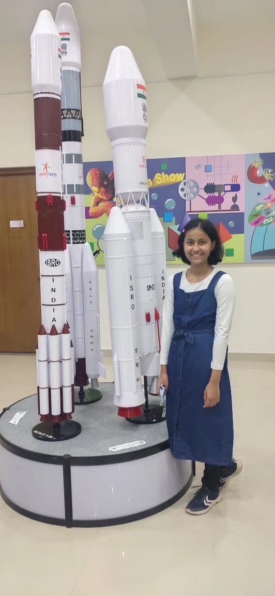
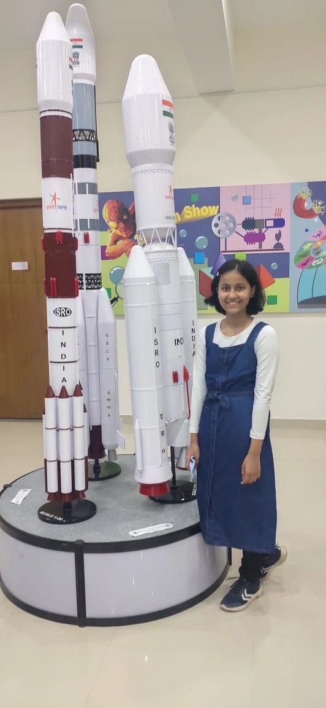

Home |
Achievements |
Leadership positions |
Performance in academics |
Current roles, future aspirations, positions held |
Contact and active social media |
Resume |
Home |
Achievements |
Leadership positions |
Performance in academics |
Current roles, future aspirations, positions held |
Contact and active social media |
Resume |
Read this passage to know more about Keshika Verma's extracurriculars!
As a child, I remember spending hours a day, practising just one dance move,
practising for a month just in order to win a dance competition at school, which I now find of
little significance. Memories of Dance Competitions, singing competitions, fancy dress competitions,
Declamation Competitions and thousand other things are stretched in my mind for time immemorial.
With so much to remember and share with my connections, I've divided the description of my school
journey into three posts. The first one is about the leadership positions I have held, the second of
my academics and third about my extracurriculars. This is Post 3.
In class 5, I remember winning myself 5 gold medals and 2 silver medals in English declamation,
Hindi declamation, dance, singing, story writing, and whatnot!, along with rank 3 in the class. I
was not less than an all rounder and it got even better in grade 6!
In grade 7 and 8, the lock down hit. But...that did not stop me. I kept working hard.
In grade 8, I got my first significant out of school achievement, which blew my mind and my family's
mind! 3rd in North India was a big deal! How? - I participated in the ASISC Father Hess Memorial
Literary events (grade 8) for the Declamation Category and won myself a gold medal at the state
level, receiving a golden opportunity to represent my state (Himachal Pradesh) in the northern
region of India. I won third rank in North India.
I did the same in grade 9, with first rank in the state and went to St. Stephen's School Chandigarh
for the Regional competition. I got to interact with so many people having similar interests and
future plans, which was a lot of fun. In grade 10, I won the silver medal at state level and I found
myself to be lucky to interact and share thoughts with the people at Sacred Heart Sr. Sec. School,
Dharamshala, Himachal Pradesh.
Because of the unwavering guidance and support I received from my bro Alankrit Verma, I started
participating in more competitions.
I was a part of the school's girls' football team in grade 9. I have a proven track record in
English, winning all the Competitions, and winning a laptop in the Byjus' Win a Laptop challenge!! I
love making rangoli and coordinated a team to make a rangoli based on space research on Children's
day!
I even brought out the actor in me. I participated in the English skit, which presented the Merchant
of Venice play by Sir. William Shakespeare; I got the role of the main character, Portia, because of
my eloquence in English and unexpected talent in acting. I organised a cultural fiesta for a
gathering of 1950+ people. I even won the title of 'Miss OLS' in the farewell function. For my
Eloquence, Leadership Skills and Wisdom, I was titled 'Miss Future President' by my juniors at
school.
Lastly, of course, I believe - “If you can speak, you can influence. If you can influence, you can
change lives”.
I have just won the AIR 6 in the national debate by bal education trust
Also, I am interning as an Outreach Coordinator at Unsway and Content writer at Saarthi.
Click here to find the list of achievements


 
